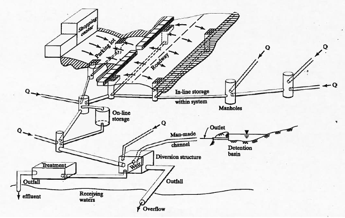

21. Storm Sewer Hydrology¶
Course Website
Readings¶
Videos¶
Outline¶
Storm Sewers introduction
Goodwin Street Example (and Spreadsheet)
Storm Sewers¶
Storm sewers are an essential component of urban drainage systems, designed to manage the runoff generated by rainfall events. Unlike sanitary sewers, which carry wastewater, storm sewers convey rainwater and surface runoff away from streets, parking lots, and other impervious surfaces to prevent flooding and waterlogging in urban areas. These systems typically consist of a network of inlets, underground pipes, manholes, and outfalls that discharge water into nearby water bodies such as rivers, lakes, or retention basins. Properly designed storm sewer systems help reduce flood risks, protect infrastructure, and improve safety by minimizing surface water accumulation during storms.

Storm Sewer Components
Inlets to capture runoff
Conduits to convey to outfall
Lift Stations if cannot gravity flow to outfall
Detention and diversions
Outfalls release water back into environment
Hydrological Considerations in Storm Sewer Design¶
Storm sewer design requires careful consideration of various hydrological factors to ensure the system can handle anticipated runoff volumes and flow rates. Some of the key hydrological aspects include:
Rainfall Intensity and Duration: The design process begins with an analysis of rainfall data, often based on intensity-duration-frequency (IDF) curves. These curves help determine the intensity and duration of rainfall events that the storm sewer system should be able to manage. Engineers typically design for specific return periods, such as a 10-year or 100-year storm event, depending on local regulations and the level of protection required. (We have already examined these topics!)
Runoff Coefficients: Runoff coefficients represent the fraction of rainfall that becomes surface runoff. These coefficients vary based on the type of land cover (e.g., impervious surfaces like roads and rooftops, or pervious areas like parks and gardens). The more impervious the area, the higher the runoff coefficient, which results in greater volumes of stormwater entering the system. (We have examined runoff generation via Unit Hydrographs as well as rational method)
Watershed Characteristics: The size, slope, and shape of the drainage area (watershed) contribute to how quickly and how much water will enter the storm sewer system. Steeper slopes typically lead to faster runoff, while larger watersheds generate greater volumes of water. These characteristics influence the required capacity of storm sewers. (The whole point of delineation, and path identification)
Time of Concentration: This is the time it takes for runoff to travel from the furthest point in the watershed to the storm sewer inlet. The time of concentration affects the peak flow rate that the system must handle. Shorter times of concentration generally lead to higher peak flows. (Synthetic unit hydrographs)
Peak Flow Estimation: Hydrologists use methods such as the Rational Method or more complex hydrological models to estimate the peak flow rate that storm sewers will need to convey. Peak flow is critical in determining the diameter of pipes and the placement of inlets to avoid overloading the system.
Infiltration and Storage: In some cases, designers incorporate infiltration or storage solutions (such as detention basins or permeable pavements) to reduce the volume and speed of water entering the storm sewer. This mitigates the risk of overwhelming the system during heavy rainfall events. (Why we model things!)
Note
There is a whole set of hydraulic concerns, these are generally handled contemporanously (at the same time) in design and analysis.
A Rational Method for Storm Sewer Conduit Sizing¶
The Rational Method is a widely used, straightforward approach for sizing storm sewer conduits and estimating stormwater runoff, particularly in urban drainage design. It is used to obtain initial estimates of conduit diameters, flowlines, and hydraulic grade lines for storm sewer systems. Although more advanced hydrologic models are available, the Rational Method remains popular for preliminary design due to its simplicity and ease of application, especially when dealing with small catchments. Overview of the Rational Method
The Rational Method estimates peak runoff from a given watershed using the formula:
\(Q=CIA\)
Where:
\(Q\) = Peak runoff rate (cubic feet per second or cfs), \(C\) = Runoff coefficient (dimensionless), representing the portion of rainfall that becomes surface runoff, \(I\) = Rainfall intensity (inches per hour), determined based on the design storm and time of concentration for the watershed, \(A\) = Drainage area (acres).
Steps for Storm Sewer Conduit Sizing Using the Rational Method¶
Determine the Design Storm Event: Identify the design storm return period (e.g., 5-year, 10-year, or 100-year storm) based on local regulations or standards. This helps establish the rainfall intensity (II) for the design.
Estimate the Time of Concentration: The time of concentration (\(T_C\)) is the time it takes for runoff to travel from the most distant point of the catchment to the outlet or point of interest. Several empirical methods (e.g., Kirpich’s equation) can be used to calculate this value.
Select the Runoff Coefficient (C): The runoff coefficient is chosen based on the land cover within the drainage area. For example, impervious surfaces (like pavement) will have a higher C value (around 0.9), while pervious surfaces (like grassland) will have a lower value (around 0.2). Mixed land uses are weighted to determine an appropriate CC value for the entire catchment.
Calculate Peak Runoff (\(Q_P\)): Using the Rational Method equation, the peak runoff \(Q_P\) is calculated by multiplying the runoff coefficient CC, the rainfall intensity \(I\), and the drainage area AA.
Conduit Sizing: Once the peak runoff \(Q_P\) is determined, the required diameter of the storm sewer conduit can be estimated using Manning’s equation for open channel flow, assuming the conduit is flowing full or partially full. Manning’s equation is:
\(Q=\frac{1.49}{n}AR^{2/3}S_0^{1/2}\)
Where:
\(Q\) = Discharge (cfs),
\(n\) = Manning’s roughness coefficient (dimensionless),
\(A\) = Cross-sectional area of flow (square feet),
\(R\) = Hydraulic radius (feet),
\(S_0\) = Slope of the conduit (ft/ft).
The required pipe diameter can be determined iteratively by solving Manning’s equation for AA and matching it with the calculated peak runoff \(Q\).
Hydraulic Grade Line (HGL) and Flowline: The Hydraulic Grade Line (HGL) represents the level to which water would rise in open vertical tubes attached to the conduit. It is used to assess the system’s capacity to convey flow without excessive pressure buildup. The flowline refers to the bottom elevation of the pipe at various points along the system. These elevations are crucial for ensuring gravity flow and preventing backflow within the system.
To approximate the HGL by hand, designers often check that the conduit slope and size provide sufficient capacity by comparing the HGL with the energy grade line (EGL), which accounts for both the potential and kinetic energy within the system. By adjusting the pipe size or slope, the designer ensures the HGL stays within acceptable bounds.
Advantages of the Rational Method¶
Simplicity: The Rational Method is straightforward and can be applied manually without requiring complex computer simulations, making it useful for small drainage areas.
Preliminary Design: It provides a good starting point for conduit sizing, helping designers quickly estimate pipe diameters, slopes, and flowlines before conducting more detailed hydraulic analyses.
Applicability for Urban Settings: The method is particularly suited for urban environments with impervious surfaces, where runoff behavior is more predictable.
Limitations of the Rational Method¶
Small Catchment Limitation: The Rational Method is typically recommended for small watersheds (less than 200 acres) because it assumes uniform rainfall distribution and runoff response, which may not hold in larger or more complex watersheds.
Peak Flow Only: It estimates only the peak runoff rate and does not provide information about the full runoff hydrograph (i.e., the variation of flow over time).
Constant Runoff Coefficient: The method assumes a constant runoff coefficient CC, which may vary during a storm event due to factors like soil saturation or changing land cover conditions.
Summary¶
The Rational Method provides a practical, by-hand approach for obtaining initial estimates of conduit diameters, flowlines, and hydraulic grade lines for storm sewer systems. It serves as a preliminary design tool, ensuring that designers can evaluate the capacity and size of storm sewer conduits before engaging in more sophisticated analyses, making it an essential tool in urban stormwater management.
Conduit Design¶
Conduits are structures that convey water from one location to another.
Pipes
Culverts
Open Channels
Design task is to select size, material, and slope
STORM SEWER – USUALLY DESIRE TO OPERATE WITH FREE SURFACE (AS AN OPEN CHANNEL)
SANITARY SEWER – SIMILAR USUALLY WANT A FREE SURFACE
SIZE (DIAMETER) IS DICTATED BY
FLOW REQUIRED
BURIAL DEPTH RELATIVE TO DROP AVAILABLE
A GOOD PRELIMINARY DESIGN CAN BE OBTAINED USING A COMBINATION OF THE RATIONAL EQUATION AND MANNING’S EQUATION
DONE WITHOUT REGARD TO DOWNSTREAM BOUNDARY CONDITIONS
NEEDS TO BE CHECKED USING A HYDRAULIC MODEL (LIKE SWMM)
Determine discharge in each pipe, then size using Manning’s equation
In US Customary: \(D=1.333\times(\frac{Q}{S_)^{1/2}})^{3/8}\)
The size assumes full, but pipe will have free surface and probably be at 80% full as per typical hydraulic elements chart.
Layout of system with:
Drainage areas and inlet locations
Pipes
Outfall
Elevations
Start with most upstream area:
Determine inlet time of concentration
Determine drainage area runoff coefficient
Pipe size (start upstream)
Select pipe size
Design Guidelines
Discharge selects diameter \(D=1.333\times(\frac{Q}{S_)^{1/2}})^{3/8}\)
Use velocity criteria to adjust slope, iterate on diameter \(V=\frac{1.49}{n}(\frac{D}{4})^{2/3} \sqrt{S_0}\)
Record pipe travel time for next stage \(t_{travel} = \frac{L}{V}\)
At most upstream inlet
Compute \(Q_p = CIA\) using inlet time for intensity, and draingae area to the inlet as area.
Size pipe from this inlet to hold \(Q_p\)
Add pipe travel time to inlet time to route to next downstream junction
At next upstream inlet
Determine inlet time of concentration
Determine drainage area runoff coefficient
Compute \(Q_p = CIA\) using inlet time for intensity, and draingae area to the inlet as area.
Size pipe from this inlet to hold \(Q_p\)
Add pipe travel time to inlet time to route to next downstream junction
At junction and inlet
Determine inlet time of concentration
Determine drainage area runoff coefficient
Choose largest of local inlet time (above) or upstream node + travel time
Compute \(Q_p\) leaving the junction from:
\(Q_p = (CA_{local} + \sum{CA_{upstream}}) I_{T_C}\)
Continue downstream in same fashion (from upstream to junction) until reach the outfall.
Accumulate \(CA\) values and \(T_C\) as move downstream
Check that all areas add to total area
Check that \(T_C\) increases in value as move downstream.
At the outfall should have:
Pipe sizes
Pipe discharges
Pipe slopes, then construct flowline (invert elevations) to ensure sewer fits between land surface and outfall invert elevation.
The next step is to actually check hydraulics using a hydraulic model.
A spreadsheet that illustrates the method CMM pp 499-507, is linked at Goodwin Storm Sewer Example